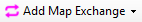

Add/Map Exchange
Toolbar Button:

The Add Map Exchange menu adds a map exchange to a map. There are two kinds of map exchanges (click below for detailed information):
Once you have added a map exchange, the editing window allows switching between parts of the course.